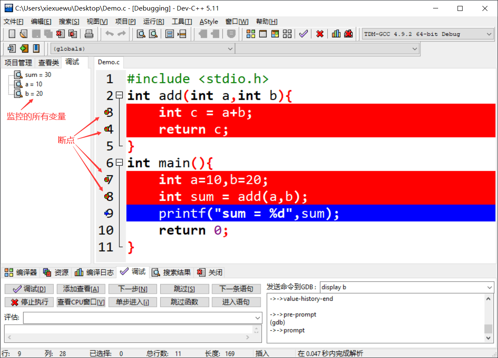

首页 > 编程笔记
Dev C++调试程序方法详解
所谓调试程序，就是控制编译器一行一行地执行代码，过程中可以清楚看到每个变量值的变化情况、函数的调用过程等，进而发现程序中隐藏的错误或者低效的代码。
作为一款免费、开源的 C/C++ IDE，Dev C++ 内嵌 GCC 编译器和 GDB 调试器，既能编译、运行程序，也能调试程序。本节，我们以一段完整的 C 语言程序为例，系统地学一下如何用 Dev C++ 调试程序。
所谓断点（BreakPoint），可以简单地理解成障碍物，汽车遇到障碍物不能通行，程序遇到断点就会暂停执行。Dev C++ 给程序设置断点的方法很简单，想在哪一行代码处暂停执行，直接单击代码所在行的行号即可。例如：

图 1 Dev C++添加断点
如上图所示，我们成功地在第 7 行代码处添加了一个断点。注意，以正常方式点击“编译运行”按钮（快捷键是 "Fn+F11"）运行程序，断点是不会生效的，只有点击“调试”按钮（快捷键是 Fn+F5）运行程序时才有效。

图 2 调试程序

图 3 断点发挥作用
当程序暂时执行时，借助调试窗口中的按钮可以查看某些变量的值，还可以控制编译器继续往下执行程序。整个调试窗口中，常用的按钮以及含义分别是：
举个例子，点击“添加查看”按钮监视变量 sum 值的变化情况，添加之后如下图所示：

图 4 添加要监控的变量
初始状态下，变量 sum 的值为 0。点击“下一步”，执行第 7 行代码，箭头光标指向第 8 行，变量 sum 的值仍为 0。再点击“下一步”，执行第 8 行代码，箭头光标指向第 9 行，变量 sum 的值变为 30。
调试过程中，Dev C++ 支持同时监控多个变量，还支持在程序中设置多个断点，如下图所示：
目前，多数人使用的都是 Windows 10 操作系统，但遗憾地是，即便是最新版本的 Dev C++（目前的最新版本是 5.11），在 Windows 10 上的兼容性并不好，有时会出现各种奇葩的问题。
举个例子，某些版本的 Dev C++ 调试 C++ 程序时，遇到 endl 会出现“卡死”的情况，无法继续调试程序。遇到这种情况，比如容易的解决方案是：将 endl 用 '\n' 替换，就可以解决这个问题。
作为一款免费、开源的 C/C++ IDE，Dev C++ 内嵌 GCC 编译器和 GDB 调试器，既能编译、运行程序，也能调试程序。本节，我们以一段完整的 C 语言程序为例，系统地学一下如何用 Dev C++ 调试程序。
#include <stdio.h>
int add(int a,int b){
int c = a+b;
return c;
}
int main(){
int a=10,b=20;
int sum = add(a,b);
printf("sum = %d",sum);
return 0;
}
Dev C++调试程序
默认情况下，程序会瞬间从开头执行到结尾，除非中途出现错误（称为“运行时错误”，比如读写内存失败、数组越界等）。要想让程序暂停执行，就需要设置一个断点。所谓断点（BreakPoint），可以简单地理解成障碍物，汽车遇到障碍物不能通行，程序遇到断点就会暂停执行。Dev C++ 给程序设置断点的方法很简单，想在哪一行代码处暂停执行，直接单击代码所在行的行号即可。例如：
图 1 Dev C++添加断点
如上图所示，我们成功地在第 7 行代码处添加了一个断点。注意，以正常方式点击“编译运行”按钮（快捷键是 "Fn+F11"）运行程序，断点是不会生效的，只有点击“调试”按钮（快捷键是 Fn+F5）运行程序时才有效。
图 2 调试程序
点击“调试”按钮，或者按下快捷键“Fn+F5”，程序开始执行，直到第 7 行代码处（当前行代码尚未运行）暂停，如下所示：注意，只有在“Debug”模式下才能使用调试功能，如图 2 所示，本节选用的是“TDM-GCC 4.9.2 64-bit Debug”模式。
图 3 断点发挥作用
当程序暂时执行时，借助调试窗口中的按钮可以查看某些变量的值，还可以控制编译器继续往下执行程序。整个调试窗口中，常用的按钮以及含义分别是：
- 添加查看：查看某个变量的值，还可以看到值的变化情况；
- 下一步：控制编译器向下执行一行语句；
- 单步进入：功能和“下一步”按钮类似，不同之处在于，当程序中调用某个自定义的函数时，此按钮可以进入到函数内部，继续调试函数内部的代码，而 "下一步" 按钮不会；
- 跳过：继续执行程序，遇到下一个断点暂停执行；
- 停止执行：停止调试程序。
举个例子，点击“添加查看”按钮监视变量 sum 值的变化情况，添加之后如下图所示：
图 4 添加要监控的变量
初始状态下，变量 sum 的值为 0。点击“下一步”，执行第 7 行代码，箭头光标指向第 8 行，变量 sum 的值仍为 0。再点击“下一步”，执行第 8 行代码，箭头光标指向第 9 行，变量 sum 的值变为 30。
当箭头光标指向第 8 行代码时，点击“单步进入”按钮，箭头光标会进入 add() 函数并指向第 3 行代码，感兴趣的读者可自行尝试。
调试过程中，Dev C++ 支持同时监控多个变量，还支持在程序中设置多个断点，如下图所示：

图 5 多个断点和监控多个变量
图 5 多个断点和监控多个变量
Dev C++调试注意事项
对于修改后的程序，调试程序之前一定要先编译程序。目前，多数人使用的都是 Windows 10 操作系统，但遗憾地是，即便是最新版本的 Dev C++（目前的最新版本是 5.11），在 Windows 10 上的兼容性并不好，有时会出现各种奇葩的问题。
举个例子，某些版本的 Dev C++ 调试 C++ 程序时，遇到 endl 会出现“卡死”的情况，无法继续调试程序。遇到这种情况，比如容易的解决方案是：将 endl 用 '\n' 替换，就可以解决这个问题。
关注公众号「站长严长生」，在手机上阅读所有教程，随时随地都能学习。内含一款搜索神器，免费下载全网书籍和视频。

微信扫码关注公众号